Key Metrics
The Problem
Well-sensor telemetry (high-frequency, noisy, multi-well) and oil market signals (EIA spot prices, Baker Hughes rig counts) lived in separate worlds. Engineers could not answer questions like "did this production anomaly coincide with a price regime shift?" without manual joins across CSV dumps, APIs, and PDFs.
The platform needed to replay historical Volve field data as live SCADA streams, ingest market feeds continuously, validate and route everything reliably, and serve both real-time anomaly alerts and batch ML over a shared warehouse and lake.
Architecture
Producers → broker → ingestion/search/warehouse → stream + batch compute → observability

Approach & Implementation
- Brokered ingestion: producers publish to topic exchanges (petroleum.sensors, petroleum.market) with a dead-letter exchange, decoupling replay/scraper rates from consumers.
- NiFi validation & routing: 3-node cluster validates JSON, enriches with reference data, and routes sensor streams to Elasticsearch plus BigQuery/MinIO for analytics.
- Stream anomaly detection: Apache Beam on Flink keys by well_id + sensor_type, applies tumbling/sliding windows with z-score/IQR detection, writes anomalies back to RabbitMQ and Elasticsearch.
- Batch feature & ML layer: PySpark jobs build daily features, retrain Isolation Forest models weekly, and run production-vs-price correlation analysis.
- Searchable operations log: daily Elasticsearch indices for sensor readings, market data, and drilling reports with Kibana for ad-hoc analysis.
- Full local parity: 13-service Compose stack (NiFi ×3, RabbitMQ, ES, Kibana, Flink, BigQuery emulator, MinIO, Prometheus, Grafana, Postgres, Jenkins) with IaC via Terraform and K8s manifests.
Challenges & Solutions
Challenge: Bursty replay vs. slow consumers
SCADA replay at 10–60x real-time overwhelmed downstream processors during backfills.
Solution: Broker + NiFi backpressure
RabbitMQ absorbs bursts with quorum queues and publisher confirms; NiFi backpressure thresholds and provenance tracking keep the cluster stable and debuggable.
Challenge: Exactly-once stream semantics
Duplicate sensor readings produced false anomaly alerts on job restarts.
Solution: Flink checkpointing
Beam-on-Flink checkpointing with savepoints gives exactly-once processing; anomalies are idempotently keyed before writing to Elasticsearch.
Challenge: Heterogeneous source formats
Volve LAS/CSV/WITSML history, EIA JSON API, and Baker Hughes HTML tables each needed different parsing.
Solution: Normalize at the edge
Scraper/replay producers emit a canonical event envelope into RabbitMQ; NiFi validates and enriches once, so stream and batch layers share one schema.
Outcome
A single Compose command boots the whole platform with health checks, seeded Volve history, and live market scrapers. Grafana shows pipeline throughput alongside business metrics — anomalies, prices, production, and their correlations — while Prometheus and the ELK path cover infra and logs.
Terraform, Ansible, and K8s manifests carry the same topology from laptop to cloud, so the 3-node NiFi cluster, broker exchanges, and Flink jobs promote without redesign.